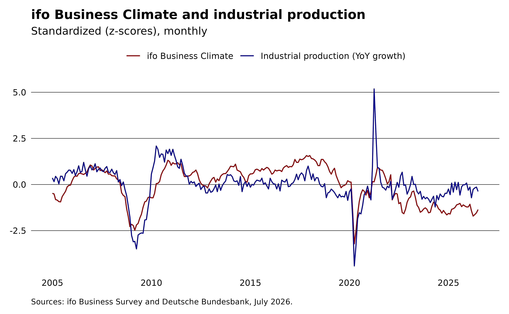
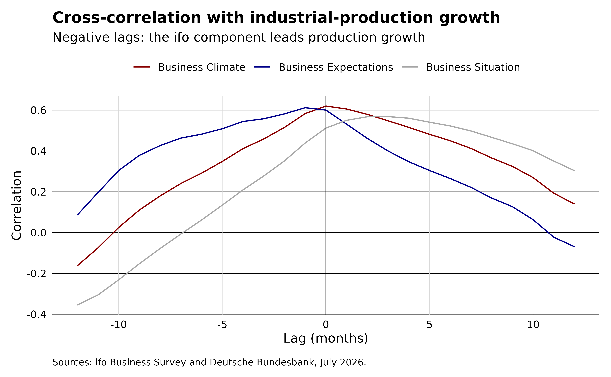
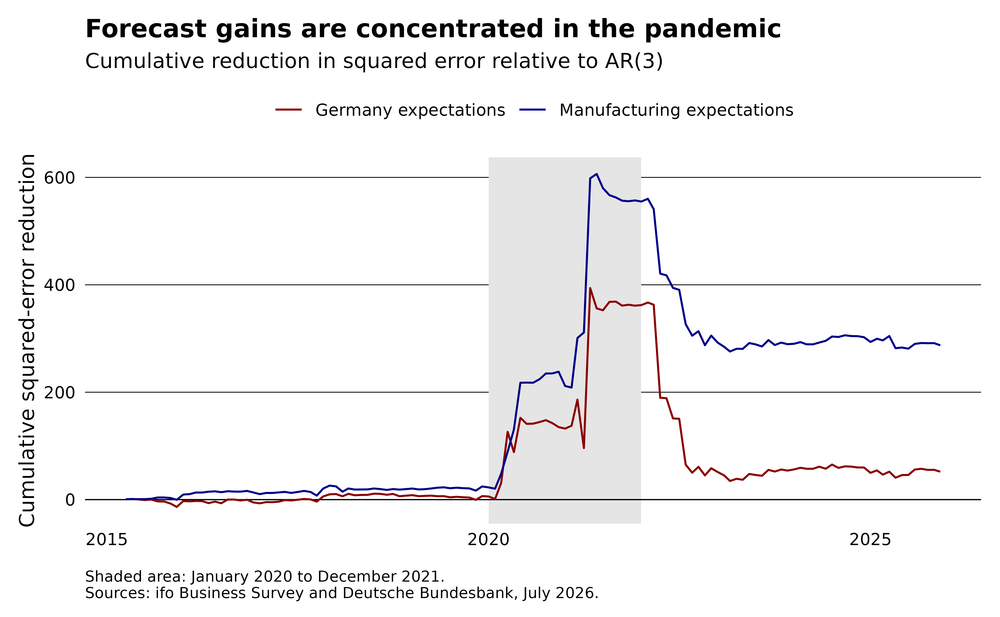

Evaluating the ifo Business Climate as a leading indicator
Source:vignettes/articles/leading-indicator.Rmd
leading-indicator.RmdFirms report their current situation and expectations before official statistics become available, so the ifo Business Climate may reveal changes in economic activity earlier. We test this claim by adapting the evaluation framework of Hüfner and Schröder (2002). This article revisits the main qualitative tests with current data rather than reproducing the original samples or forecast tables. Lehmann (2023) provides a broader review of the forecasting evidence from the ifo Business Survey.
Following Fritsche and Stephan (2000), we ask whether the ifo index satisfies three criteria of a good leading indicator:
- Co-movement. The indicator should move with industrial production.
- Predictive direction. Past values of the indicator should help predict activity, while past values of activity should not predict the indicator.
- Forecast value. The indicator should improve a forecast beyond what the activity series predicts about itself.
We use the ifo Business Climate together with the German industrial production index. Both series are monthly, so no mixed-frequency modeling is needed. We download industrial production from the Deutsche Bundesbank with the bbk package.
library(ifo)
library(bbk)
library(data.table)
library(ggplot2)
theme_ifo <- function(...) {
theme_minimal(...) +
theme(
legend.title = element_blank(),
legend.position = "top",
plot.title = element_text(face = "bold"),
plot.caption = element_text(hjust = 0, vjust = 0, size = 8, margin = margin(10, 0, 0, 0)),
panel.grid.major.y = element_line(color = "black", linewidth = 0.2),
panel.grid.major.x = element_blank(),
panel.grid.minor = element_blank(),
axis.text = element_text(color = "black"),
axis.title = element_blank(),
plot.margin = margin(10, 10, 10, 10)
)
}Assembling the data
The ifo Business Climate for Germany comes in long format. We keep the headline index values and reshape climate, situation, and expectations into columns.
survey_long <- setDT(ifo_business("germany"))
survey <- dcast(survey_long[series == "index"], yearmonth ~ indicator, value.var = "value")
head(survey)
#> Key: <yearmonth>
#> yearmonth climate expectation situation
#> <Date> <num> <num> <num>
#> 1: 2005-01-01 92.2 97.2 87.5
#> 2: 2005-02-01 92.0 96.2 87.9
#> 3: 2005-03-01 90.1 94.5 85.8
#> 4: 2005-04-01 89.9 93.7 86.3
#> 5: 2005-05-01 89.4 92.7 86.1
#> 6: 2005-06-01 89.3 93.2 85.6German industrial production (producing sector excluding construction, calendar and seasonally adjusted, 2021 = 100) is a single Bundesbank series. We convert the level index into a year-on-year growth rate, the transformation used by Hüfner and Schröder as their measure of economic activity.
ip <- bbk_data("BBDE1", key = "M.DE.Y.BAA1.A2P100000.G.C.I21.A") |>
setorder(date) |>
_[, .(yearmonth = date, ip_growth = 100 * (value / shift(value, 12L) - 1))]
activity <- survey[ip, on = "yearmonth", nomatch = 0L]The production series reaches back to 1991, but the ifo index for Germany as a whole starts in January 2005, so the overlapping sample runs from January 2005 to July 2026 (259 months).
Criterion 1: co-movement
Plotting the ifo climate index against industrial-production growth shows how closely the two series track each other (both standardized to make them comparable on one axis).
z <- function(x) (x - mean(x)) / sd(x)
activity[, .(yearmonth, ifo = z(climate), ip = z(ip_growth))] |>
melt(id.vars = "yearmonth") |>
ggplot(aes(x = yearmonth, y = value, color = variable)) +
geom_line() +
labs(
title = "ifo Business Climate and industrial production",
subtitle = "Standardized (z-scores), monthly",
caption = sprintf(
"Sources: ifo Business Survey and Deutsche Bundesbank, %s.",
format(max(activity$yearmonth), "%B %Y")
)
) +
scale_color_manual(
values = c(ifo = "darkred", ip = "darkblue"),
labels = c(ifo = "ifo Business Climate", ip = "Industrial production (YoY growth)")
) +
theme_ifo()
The two follow the same broad swings, though they drift apart at times, and the contemporaneous correlation is moderate rather than tight:
cor(activity$climate, activity$ip_growth)
#> [1] 0.6199274To examine the lead-lag structure, we use the cross-correlation function. Negative lags describe the ifo index leading production growth. We separate the headline climate index into the assessment of the current situation and the forward-looking expectations. Hüfner and Schröder stress the expectations component, since a leading signal should come from what firms anticipate rather than from what they already observe.
xc <- activity |>
melt(
id.vars = "ip_growth",
measure.vars = c("situation", "expectation", "climate"),
variable.name = "component",
value.name = "ifo_value",
variable.factor = FALSE
) |>
_[,
{
cc <- ccf(ifo_value, ip_growth, lag.max = 12L, plot = FALSE)
.(lag = as.integer(cc$lag), correlation = as.numeric(cc$acf))
},
by = component
]
ggplot(xc, aes(x = lag, y = correlation, color = component)) +
geom_line() +
geom_vline(xintercept = 0, linewidth = 0.3) +
labs(
title = "Cross-correlation with industrial-production growth",
subtitle = "Negative lags: the ifo component leads production growth",
x = "Lag (months)",
y = "Correlation",
caption = sprintf(
"Sources: ifo Business Survey and Deutsche Bundesbank, %s.",
format(max(activity$yearmonth), "%B %Y")
)
) +
scale_color_manual(
values = c(climate = "darkred", expectation = "darkblue", situation = "darkgrey"),
labels = c(
climate = "Business Climate",
expectation = "Business Expectations",
situation = "Business Situation"
)
) +
theme_ifo() +
theme(
axis.title = element_text(),
panel.grid.major.x = element_line(color = "grey85", linewidth = 0.2)
)
The lag at which each curve peaks orders the three components as the theory suggests:
xc[, .SD[which.max(correlation)], by = component]
#> component lag correlation
#> <char> <int> <num>
#> 1: situation 3 0.5681060
#> 2: expectation -1 0.6123049
#> 3: climate 0 0.6199274The peak correlation occurs at lag -1 for expectations, 0 for the climate index, and 3 for the situation assessment. Because negative lags indicate a lead over production, only expectations provide a clear, though short, lead. A formal test can determine whether this predictive direction holds after accounting for the history of production itself.
Criterion 2: Granger causality
A leading indicator should carry information about the future of the reference series. The Granger causality test asks whether past values of the ifo index improve a forecast of production growth beyond production growth’s own past, and whether the reverse also holds. This tests predictive information, not an economic causal mechanism.
pval <- function(x) format(signif(x[["Pr(>F)"]][2L], 2L), scientific = FALSE)
forward <- lmtest::grangertest(ip_growth ~ climate, order = 3L, data = activity)
reverse <- lmtest::grangertest(climate ~ ip_growth, order = 3L, data = activity)
forward
#> Granger causality test
#>
#> Model 1: ip_growth ~ Lags(ip_growth, 1:3) + Lags(climate, 1:3)
#> Model 2: ip_growth ~ Lags(ip_growth, 1:3)
#> Res.Df Df F Pr(>F)
#> 1 249
#> 2 252 -3 7.3804 9.324e-05 ***
#> ---
#> Signif. codes: 0 '***' 0.001 '**' 0.01 '*' 0.05 '.' 0.1 ' ' 1
reverse
#> Granger causality test
#>
#> Model 1: climate ~ Lags(climate, 1:3) + Lags(ip_growth, 1:3)
#> Model 2: climate ~ Lags(climate, 1:3)
#> Res.Df Df F Pr(>F)
#> 1 249
#> 2 252 -3 0.3328 0.8016The predictive relationship is one-directional. Lags of the ifo climate improve the production model (p = 0.000093), while lags of production do not improve the climate model (p = 0.8).
Consistent with the cross-correlation, the forward-looking expectations component gives a slightly stronger signal than the headline climate index.
lmtest::grangertest(ip_growth ~ expectation, order = 3L, data = activity)
#> Granger causality test
#>
#> Model 1: ip_growth ~ Lags(ip_growth, 1:3) + Lags(expectation, 1:3)
#> Model 2: ip_growth ~ Lags(ip_growth, 1:3)
#> Res.Df Df F Pr(>F)
#> 1 249
#> 2 252 -3 8.3522 2.593e-05 ***
#> ---
#> Signif. codes: 0 '***' 0.001 '**' 0.01 '*' 0.05 '.' 0.1 ' ' 1Criterion 3: forecast value
Does the ifo index add anything beyond what production growth already says about itself? We compare an autoregressive benchmark that predicts production growth from its own three lags against the same model augmented with three lags of the ifo climate index (the specification underlying the Granger test above). The comparison is in-sample: it measures fit, not out-of-sample forecast accuracy.
dt <- activity |>
_[, .(
ip_growth,
g1 = shift(ip_growth, 1L),
g2 = shift(ip_growth, 2L),
g3 = shift(ip_growth, 3L),
c1 = shift(climate, 1L),
c2 = shift(climate, 2L),
c3 = shift(climate, 3L)
)] |>
na.omit()
fit_ar <- lm(ip_growth ~ g1 + g2 + g3, data = dt)
fit_ar_ifo <- lm(ip_growth ~ g1 + g2 + g3 + c1 + c2 + c3, data = dt)
rmse <- function(x) sqrt(mean(residuals(x)^2))
data.table(
model = c("AR(3)", "AR(3) + ifo"),
adj_r2 = c(summary(fit_ar)$adj.r.squared, summary(fit_ar_ifo)$adj.r.squared),
rmse_in_sample = c(rmse(fit_ar), rmse(fit_ar_ifo))
)
#> model adj_r2 rmse_in_sample
#> <char> <num> <num>
#> 1: AR(3) 0.7486296 3.443976
#> 2: AR(3) + ifo 0.7663751 3.300365Adding the climate index raises adjusted R² from 0.749 to 0.766 and lowers in-sample RMSE from 3.44 to 3.30. The nested-model F test rejects the three climate coefficients being jointly zero (p = 0.000093). This is the same test used in the forward Granger comparison above:
anova(fit_ar, fit_ar_ifo)
#> Analysis of Variance Table
#>
#> Model 1: ip_growth ~ g1 + g2 + g3
#> Model 2: ip_growth ~ g1 + g2 + g3 + c1 + c2 + c3
#> Res.Df RSS Df Sum of Sq F Pr(>F)
#> 1 252 3036.4
#> 2 249 2788.5 3 247.95 7.3804 9.324e-05 ***
#> ---
#> Signif. codes: 0 '***' 0.001 '**' 0.01 '*' 0.05 '.' 0.1 ' ' 1An out-of-sample check
In-sample fit does not guarantee a better forecast. We compare the Germany-wide climate, situation, and expectations balances under the same expanding-window design. We also include manufacturing expectations to test whether a more closely matched survey series improves the forecast, as suggested by Lehmann’s review. For manufacturing expectations, we use the value first published for each month. This prevents later survey revisions from entering earlier forecasts. Starting with ten years of data, we re-estimate each model monthly and predict the next observation.
germany_components <- survey_long |>
_[series == "balance"] |>
dcast(yearmonth ~ indicator, value.var = "value") |>
setnames(
c("climate", "situation", "expectation"),
c("de_climate", "de_situation", "de_expectation")
)
manufacturing_expectation <- setDT(ifo_vintage("manufacturing"))[
vintage == yearmonth & series == "balance" & indicator == "expectation",
.(yearmonth, mfg_expectation = value)
]
forecast_data <- mergelist(
list(
activity[, .(yearmonth, ip_growth)],
germany_components,
manufacturing_expectation
),
on = "yearmonth",
how = "inner"
)
lag_variables <- setdiff(names(forecast_data), "yearmonth")
lags <- 1:3
lag_columns <- paste0(rep(lag_variables, each = length(lags)), lags)
forecast_data[, (lag_columns) := shift(.SD, lags), .SDcols = lag_variables]
models <- list(
"AR(3)" = paste0("ip_growth", lags),
"Germany climate" = c(paste0("ip_growth", lags), paste0("de_climate", lags)),
"Germany situation" = c(paste0("ip_growth", lags), paste0("de_situation", lags)),
"Germany expectations" = c(paste0("ip_growth", lags), paste0("de_expectation", lags)),
"Manufacturing expectations" = c(paste0("ip_growth", lags), paste0("mfg_expectation", lags))
)
required <- c("ip_growth", unique(unlist(models)))
forecast_data <- na.omit(forecast_data, cols = required)
initial_window <- 120L
forecast_months <- initial_window + seq_len(nrow(forecast_data) - initial_window)
roll_forecast <- function(predictors, model) {
formula <- reformulate(predictors, response = "ip_growth")
predicted <- vapply(
forecast_months,
function(month) {
fit <- lm(formula, data = forecast_data[seq_len(month - 1L)])
predict(fit, newdata = forecast_data[month])
},
numeric(1L)
)
data.table(
model,
yearmonth = forecast_data$yearmonth[forecast_months],
actual = forecast_data$ip_growth[forecast_months],
predicted
)
}
predictions <- rbindlist(Map(roll_forecast, predictors = models, model = names(models)))
forecast_scores <- predictions |>
_[, .(months = .N, rmse = sqrt(mean((actual - predicted)^2))), by = model] |>
_[, improvement_over_ar := 100 * (rmse[model == "AR(3)"] - rmse) / rmse[model == "AR(3)"]] |>
_[, let(rmse = round(rmse, 2L), improvement_over_ar = round(improvement_over_ar, 1L))]
forecast_scores[]
#> model months rmse improvement_over_ar
#> <char> <int> <num> <num>
#> 1: AR(3) 129 4.61 0.0
#> 2: Germany climate 129 4.58 0.7
#> 3: Germany situation 129 4.63 -0.5
#> 4: Germany expectations 129 4.57 1.0
#> 5: Manufacturing expectations 129 4.36 5.4Across 129 forecasts, Germany-wide expectations lower RMSE by 1% relative to the AR benchmark, slightly more than the climate balance at 0.7%. The situation balance raises RMSE by 0.5%. Manufacturing expectations lower it by 5.4%. The forecast ranking therefore agrees with the lead-lag analysis, although the differences between the Germany-wide components are small. The closer sectoral match appears to matter, but industrial production is broader than manufacturing alone. This remains a pseudo-out-of-sample exercise because industrial production and the Germany-wide balances use their latest vintages. The manufacturing series uses first-release values.
Are these gains statistically distinguishable from the benchmark? A Diebold and Mariano (1995) test on the squared-error differentials would be conservative here because the models are nested: each survey model contains the AR(3) benchmark, so its extra coefficients add estimation noise to its forecasts. Clark and West (2007) correct for this by adding the squared difference between the two forecasts back to the loss differential. The adjusted statistic is approximately standard normal, and the test is one-sided: does the survey model improve on the benchmark?
cw_scores <- predictions |>
_[, .(yearmonth, model, actual, predicted)] |>
_[, benchmark := predicted[model == "AR(3)"], by = yearmonth] |>
_[
model != "AR(3)",
{
f <- (actual - benchmark)^2 - (actual - predicted)^2 + (benchmark - predicted)^2
cw <- mean(f) / sqrt(var(f) / .N)
.(cw_statistic = cw, p_value = pnorm(-cw))
},
by = model
]
cw_scores[, .(
model,
cw_statistic = round(cw_statistic, 2L),
p_value = round(p_value, 2L)
)]
#> model cw_statistic p_value
#> <char> <num> <num>
#> 1: Germany climate 1.00 0.16
#> 2: Germany situation 0.62 0.27
#> 3: Germany expectations 1.28 0.10
#> 4: Manufacturing expectations 1.97 0.02Only manufacturing expectations clear the 5% level (p = 0.02). Germany-wide expectations are borderline (p = 0.10), and the climate and situation balances are clearly insignificant. The evidence for added predictive content is therefore concentrated in the survey series that matches the reference variable most closely. Whether that evidence rests on a few extreme months is the next question.
When do the survey indicators help?
The average RMSE hides when the forecast gains occur. We accumulate the monthly difference in squared errors between the AR benchmark and each model with expectations. The line rises when the survey model produces the smaller error and falls when the benchmark does.
forecast_gain <- predictions |>
_[, .(yearmonth, model, error = (actual - predicted)^2)] |>
_[, benchmark_error := error[model == "AR(3)"], by = yearmonth] |>
_[model %in% c("Germany expectations", "Manufacturing expectations")] |>
setorder(model, yearmonth) |>
_[, .(yearmonth, cumulative_gain = cumsum(benchmark_error - error)), by = model]
ggplot(forecast_gain, aes(x = yearmonth, y = cumulative_gain, color = model)) +
annotate(
"rect",
xmin = as.Date("2020-01-01"),
xmax = as.Date("2021-12-31"),
ymin = -Inf,
ymax = Inf,
fill = "grey90",
color = NA
) +
geom_hline(yintercept = 0, linewidth = 0.3) +
geom_line() +
labs(
title = "Forecast gains are concentrated in the pandemic",
subtitle = "Cumulative reduction in squared error relative to AR(3)",
y = "Cumulative squared-error reduction",
caption = sprintf(
"Shaded area: January 2020 to December 2021.\nSources: ifo Business Survey and Deutsche Bundesbank, %s.",
format(max(activity$yearmonth), "%B %Y")
)
) +
scale_color_manual(
values = c("Germany expectations" = "darkred", "Manufacturing expectations" = "darkblue")
) +
theme_ifo() +
theme(axis.title.y = element_text())
Caveats
The pandemic has an outsized influence on the sample. Most of the cumulative forecast gain appears in 2020 and 2021, and both models lose some of that advantage after 2022. The full-sample RMSE therefore does not show a stable forecasting advantage. A pre-2020 estimation or pandemic indicators would provide a stricter sensitivity check.
Industrial production and the Germany-wide ifo series use their latest vintages. Manufacturing expectations use first-release values. The ifo survey appears during its reference month, while official production figures appear several weeks later and are revised. A fully real-time nowcast would need release-date-aligned production vintages and could not use unpublished production lags. See Lehmann and Reif (2021) for a real-time comparison. This exercise demonstrates how to assess a leading indicator. It does not settle the ifo survey’s forecasting record.